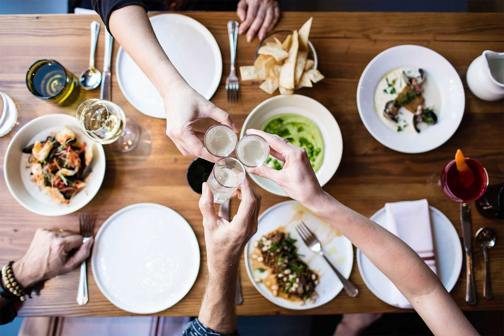
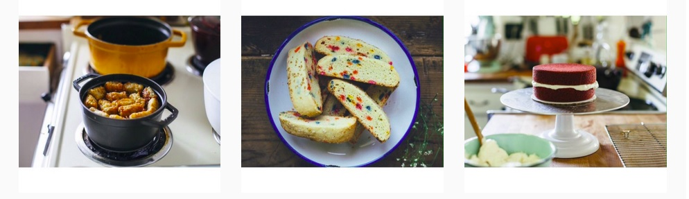

FRM
Thoughtfully grown and prepared. Join us at FRM.
Menu
Reservations
Tours
About
212-987-1234
875 Dekalb Ave

Homegrown with love and care, straight from the ground to your plate--this is what you get when you dine at FRM. FRM offers ambitious and creative seasonal menus, made from the freshest and finest ingredients from the most recent harvest.
All produce is organic and grown on the farm or nearby local farms
All animals are raised humanely on the farm or nearby local farms
The grounds and the restaurant run on sustainable solar and wind energy
Group and private tours of the farm and stables offered
Reservations and tours can be booked up to 60 days in advance
Contact me:
hgarfing@gmail.com
Yelp Reviews
New York Times Review
Food and Wine Review
